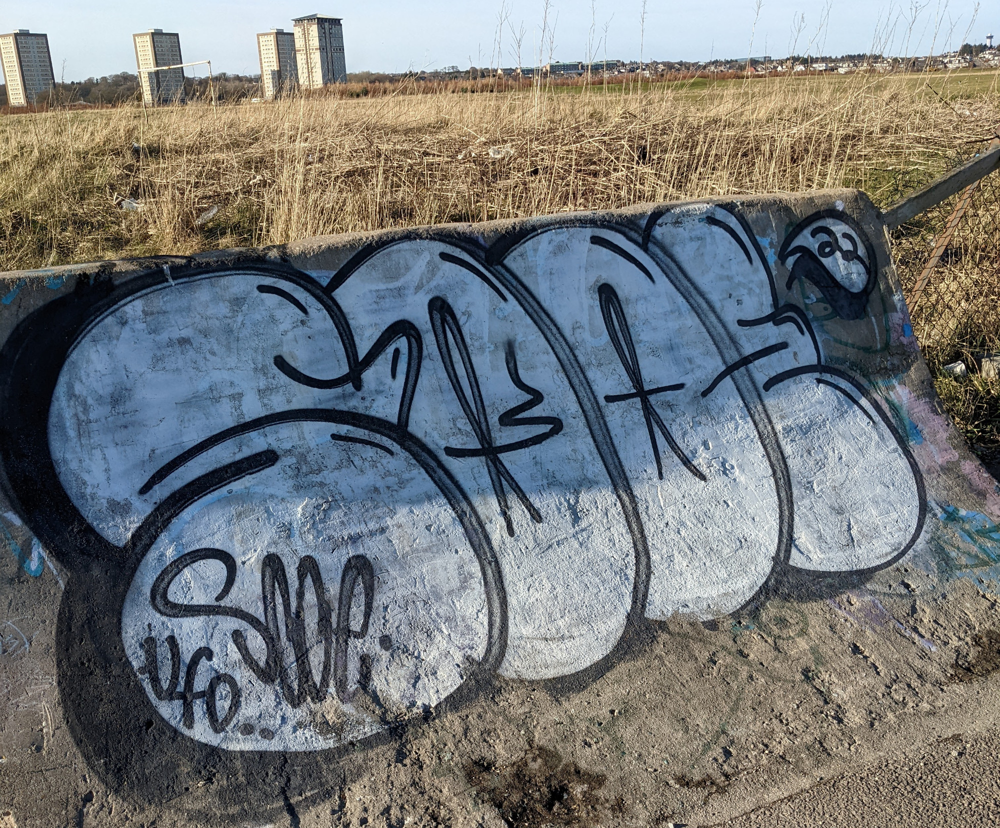

Street Art Aberdeen
Near 97 Beachview Ct, Aberdeen AB24 1WB, UK
Thanks to
Danny Christie / wired.wifi
for the photo
Photo:

Location:
Year created:
Unknown
Medium:
Spray
State:
OK
Other art nearby, the 20 closest...
Instagram image